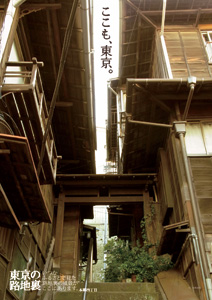
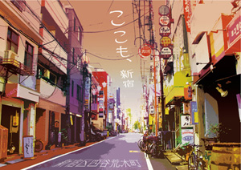

領域・授業概要＞ コミュニケーションデザイン演習B

コミュニケーションデザイン演習B（グラフィックデザイン）
紙を最終媒体としたコミュニケーションデザインの考え方を学びながら、コンピュータ上のデザイン、版下、製版に至るDTPデザインの基礎を身に付けます。課題
自分自身の「ふるさと」をテーマに、A2ポスターとA4リーフレットを制作する。実際にふるさとに足を運び情報を収集、それを元にデザインコンセプトを決定する。自らが収集・制作した写真、地図、紹介文や解説イラストなどを用いデザインを行う。
制作者：梅澤早紀

制作者：高橋瑞希
制作者：高橋瑞希

制作者：牛丸翔子
制作者：牛丸翔子
制作者：矢野花奈